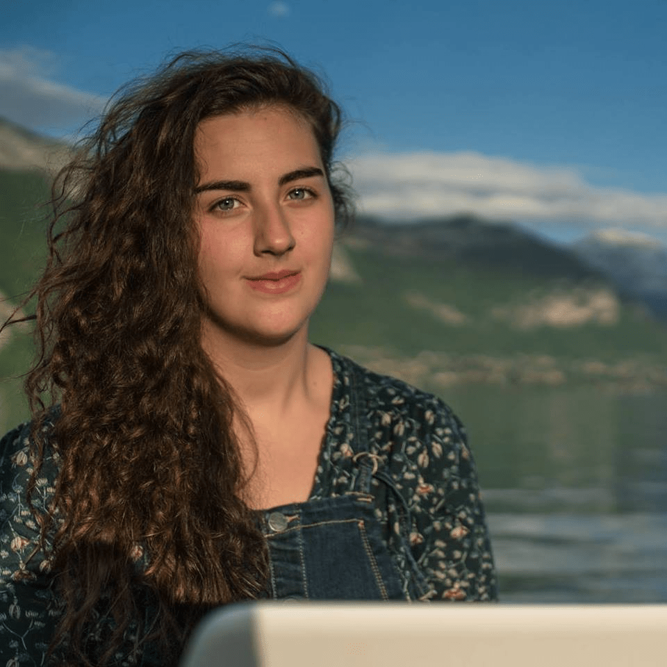

Madeline DESANDRE | Meet my professional side

Who am i ?
I'm a student in M1 international Affairs and NGO's Major in Geneva, Switzerland, previously gratuated in International Marketing Reponsable Bachelor speacialised in International trade.
With a real passion for the international context, my main activities are focused on the international business, traduced by many projects and internships abroad.
"For the only way in which a durable peace can be created is by world-wide restoration of economic activity and international trade."
Welcome to my website, here you'll find everything you want to know about me with :
Professional photos
professional content
review
recommendation letters
And many more things... ENJOY!
Madeline DESANDRE| Professional Photos
Here is some pictures of my different adventures:


My latest professional experience/passion !
Project Development Organizer | Social ambassador
Janvier 2019-Juillet 2019
People's Awareness Network Society, Jaipur, Rajasthan, Inde
¬ Online Marketing, Social Media Marketing, Writing articles on Child Protection and Teaching.
¬Creation of new methods of teaching to poor and Slums kids (+based learning activities).
¬ Participation of different activities in different part of Rajasthan State.
¬Fund raising for the NGO by conducting meeting with Industrial clients in India and abroad.
¬Creation of cultural training to the kids in order to increase the vision of poor and Slums kids.
Madeline DESANDRE | Professional content/contact
Don't hesitate to check the NGO's website if you want to more about our work ⇩
Here !
I invite you to check the website of my latest job to see more pictures ⇩
My social actions in India
I invite you to check on my LinkedIn profile to see in more details what i am capable to :)
Discover me!